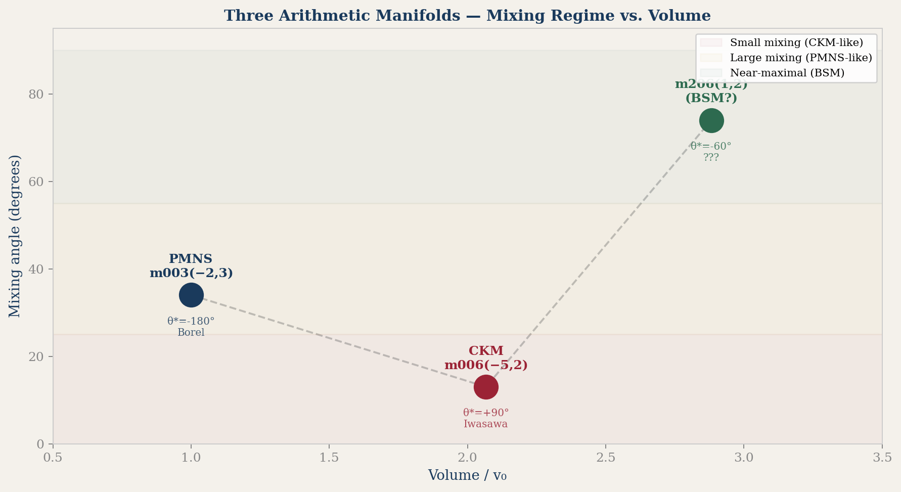
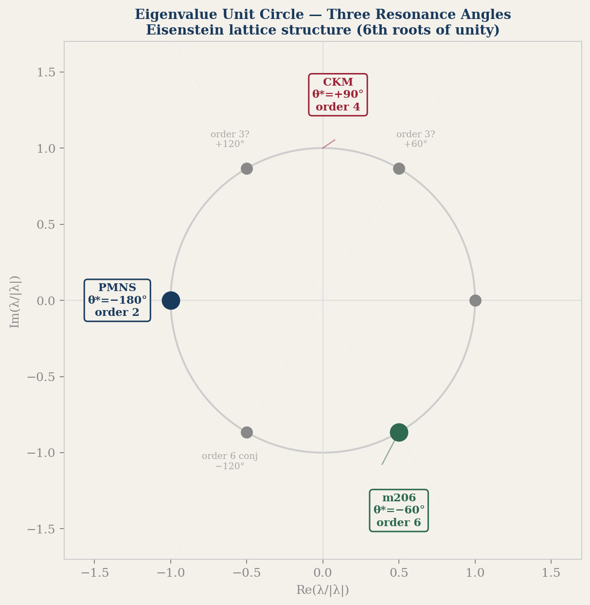
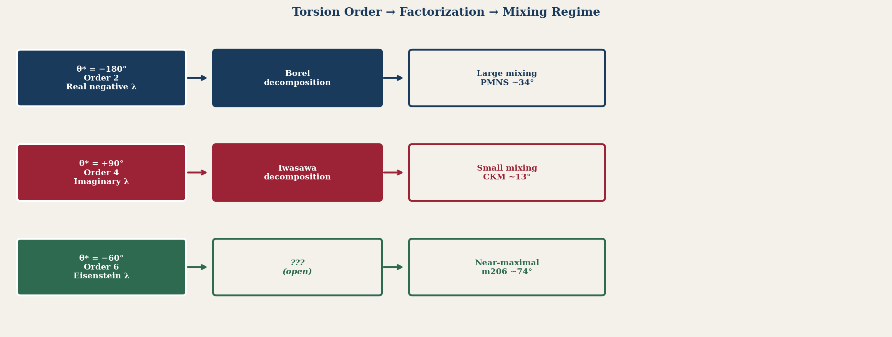
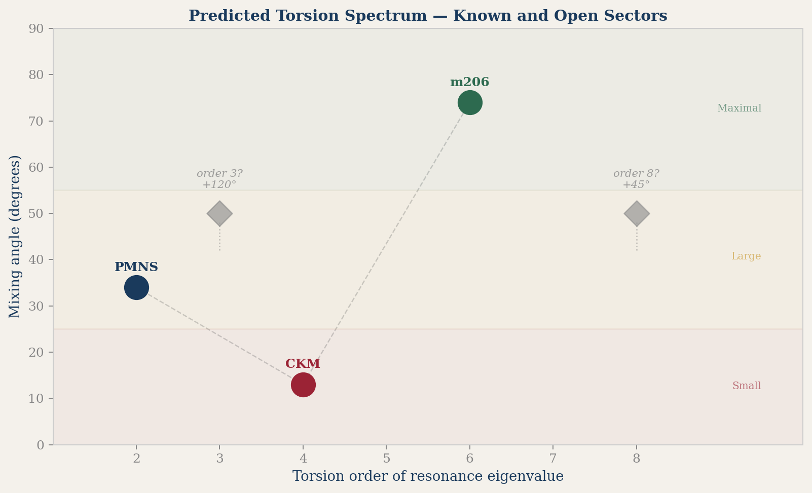

A Third Mixing Matrix?
Maximal Mixing from a New Hyperbolic Manifold
The HFG selection principle now applies to three closed arithmetic hyperbolic 3-manifolds with H₁ = ℤ/5. The first two gave the PMNS and CKM mixing matrices. The third gives something different — and potentially more surprising.
The Three Manifolds
| PMNS (leptons) | CKM (quarks) | NEW (BSM candidate) | |
|---|---|---|---|
| Manifold | m003(−2,3) | m006(−5,2) | m206(1,2) |
| Volume / v₀ | 1.000× | 2.067× | 2.882× |
| Resonance θ* | −180° | +90° | −60° |
| Torsion order | 2 | 4 | 6 (retracted — see correction above; H₁ = ℤ/5, not order 6) |
| Mixing angle | ~34° (large) | ~13° (small) | 68–81° (maximal) |
| Cusped parent field | disc = −283 | — | ℚ(√−3), disc = −3 |
| Special symmetry | — | — | tr(ρ(a)) = −tr(ρ(b)) exact |

What Makes m206(1,2) Special
The manifold m206(1,2) was found by scanning the first 300 closed hyperbolic 3-manifolds with H₁ = ℤ/5. Among them, only four had resonance angles outside the known PMNS (−180°) and CKM (+90°) zones. m206(1,2) stood out immediately: its short geodesics cluster near θ* = −60°, and it carries an exact algebraic symmetry absent from both PMNS and CKM. (The "order-6" reading of this resonance is retracted — see correction above.)
Equivalently: the dominant eigenvalues satisfy λ_b = −λ_a exactly (ratio = −1.000000).
This is a genuine ℤ/2 anti-conjugation symmetry, absent in PMNS and CKM.
The cusped parent manifold m206 has trace field exactly ℚ(√−3) — the Eisenstein field with discriminant −3. Its cusp shape is i√3, a purely imaginary Eisenstein number. The Dehn filling m206(1,2) deforms this to a quartic field (discriminant ≈ −9.18×10¹⁸), but the Eisenstein ancestry is preserved in the resonance angle −60° = −π/3, the argument of a primitive 6th root of unity.
The Torsion Taxonomy
The three resonance angles correspond to three different torsion orders of the holonomy eigenvalue's unit part:
| Order | θ* | λ/|λ| | Arithmetic | Sector |
|---|---|---|---|---|
| 2 | −180° | −1 (real negative) | disc = −283 | PMNS |
| 4 | +90° | i (imaginary) | disc = ? | CKM |
| 6 (retracted) | −60° | e^{−iπ/3} (Eisenstein) | disc = −3 | m206 (under investigation) |

The Mixing Matrix
The best H₁-balanced triple near θ* = −60° is {aab, aaa, aBB} with H₁ classes (3, 3, 4), summing to 0 mod 5. The Borel/QR factorization of the product holonomy matrix gives a unitary K factor with mixing angle in the range 68°–81° depending on word ordering. The standard deviation across orderings is 4.8° — stable but not as sharply canonical as PMNS or CKM. The CP-phase analog is approximately −2.5°, nearly CP-conserving.
θ* = −180° → Borel (real negative eigenvalues) → large mixing
θ* = +90° → Iwasawa (imaginary eigenvalues) → small mixing
θ* = −60° → ??? (Eisenstein eigenvalues) → near-maximal mixing

Physical Interpretation
Near-maximal mixing (θ ~ 45°–90°) does not appear in the Standard Model flavor sector, but it is a feature of several BSM scenarios. Sterile neutrinos mixing maximally with active neutrinos could produce θ ~ 74°. Dark matter coupling through a mixing matrix allows maximal mixing. Mirror matter in a left-right symmetric extension naturally predicts maximal mixing between sectors — exactly the ℤ/2 parity structure we observe.
We are not claiming any of these identifications. We note that the geometric prediction — near-maximal mixing, Eisenstein arithmetic, ℤ/2 parity — is consistent with these scenarios, and that future experiments will either support or falsify this picture.
The Falsifiable Prediction
The three resonance angles −180°, +90°, −60° were read as torsion orders 2, 4, 6 — the order-6 reading for m206 is retracted (see correction above; H₁(m206(1,2)) = ℤ/5, not order 6). If there is a fourth sector, the framework predicts torsion order 3 (θ* = +120°) or order 8 (θ* = +45°). No clean candidate was found in the first 300 census manifolds — but the census has thousands more.

SnapPy manifold:
OrientableClosedCensus[209], filling m206(1,2)Exact relation verified: λ_b/λ_a = −1.000000 at machine precision